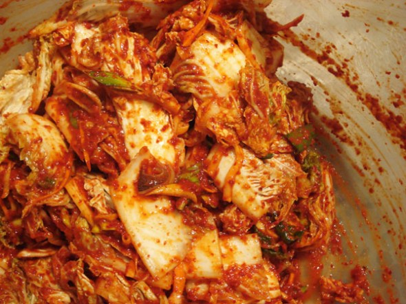

Recipe Description
Kimchi is a traditional Korean dish. It consist of salted and fermented napa cabbage and Korean radish.
This dish is not eaten by itself but enjoyed and savored with other main or side dishes. My favorite way of eating kimchi is with Korean BBQ or Kimchi stew.
Ingredients
- Napa cabbage
- 16 cups of water
- Korean sea salt (for salt water)
- 1/2 cup of cooking salt
- Glutinous rice flour
- gochugaru
- Korean radish/daikon radish
- Fine sea salt
- Korean fish sauce
- Salted fermented shrimp, minced
- Carrots
- Minced garlic
- Raw sugar
- Onions, finely chopped
Steps
- Cut cabbage into quarters and rinse in running water. Make sure stem is intact.
- Dissolve the salt in a large bowl of water. Dip the cabbage in it one at a time and transfer onto a tray for further salting.
- Pinch cooking salt and rub over thick part of cabbage. Open each leaf and sprinkle salt over thick part. Repeat process for all remaining cabbage.
- Put salted cabbage in a large food grade plastic container or large bucket. Close plastic bag or container tightly. Set cabbage aside for 6 hours.
- Once finished soaking, season with the homemade Kimchi seasoning. After all cabbage have been seasoned, put kimchi into a kimchi container or an airtight container with the lid on.
- Finally, leave out at room temperature for 24 hours, then move it into the refrigerator and wait 3-4 more days for it to have more flavor.
Back to Recipes